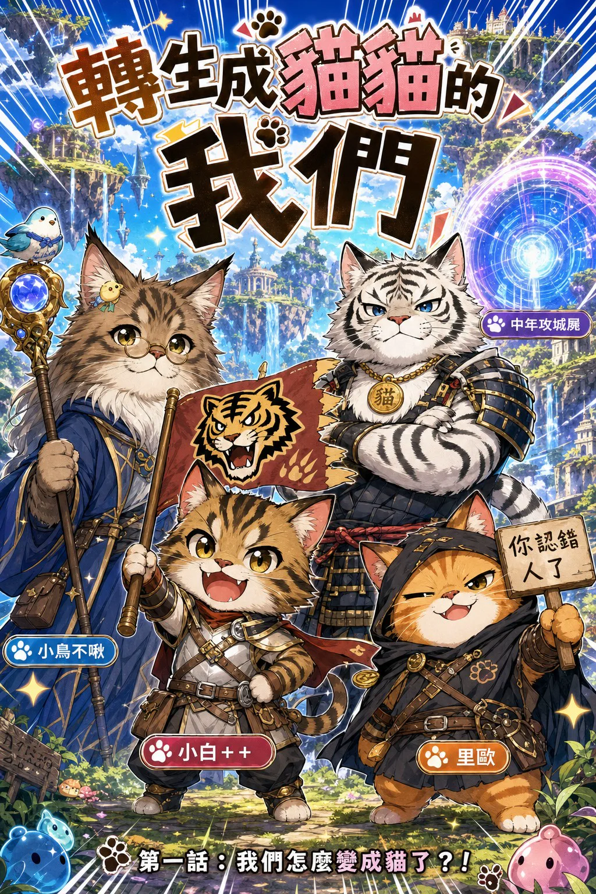

深夜加班的四位工程師，醒來發現自己長出了肉球。

二〇二六年七月三十日，LINE 的 C# 社群裡一場再普通不過的閒聊。聊著聊著，群友的暱稱一個個變成了角色，AI「擎添助理」把這些哏畫成了漫畫。
於是有了這部作品：四位深夜加班的工程師，被螢幕裡浮現的魔法陣吸進異世界，醒來發現自己全變成了貓。魔法、利爪、武士刀與隱形術，還有一隻打不死的果凍史萊姆。
第二話的封面由社群裡的荒坂小次郎親手畫成——交稿之後大家才發現，那隻紅眼睛的魔王貓就是他自己。
角色都以群友暱稱命名，故事還在繼續，未來也可能有新的夥伴加入。